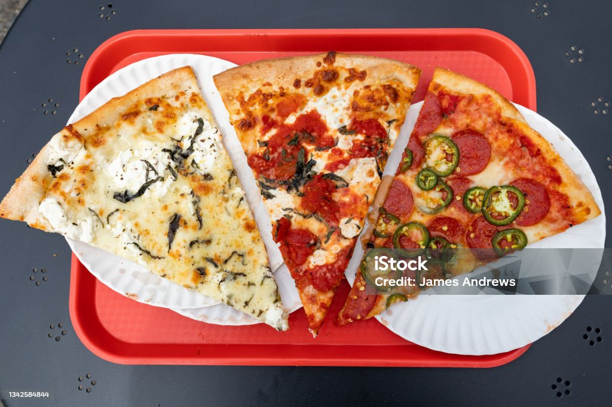

Mile Zero Kitchen Pizza Recipe

Description
This is a New York style pizza dough recipe by Mile Zero Kitchen.
The main highlights are the fast turnaround, requiring only about
one total day of preparation. This includes autolysing, cold
fermenting, resting the dough, etc. This recipe makes four 14"
pizzas.
Ingredients
- 540 grams High Gluten Flour
- 60 grams Sifted Spelt
- 1 gram Active Dry Yeast
- 17 grams Salt
- 400 grams Cold Water
- 20 grams Olive Oil
Steps
- Weigh ingedients.
- Chill ingredients in fridge.
- Combine flour and yeast.
- Aerate mixture.
- Add water, salt, and oil.
- Knead for 1 minute.
- Rest for 30 minutes.
- Stretch and fold the dough (2 sets, with 30 minutes rest
in between.
- Rest for 15 minutes after last fold.
- Divide and shape the dough into taut balls.
- Flour the bottom of container, add dough balls, and seal
the container so it's airtight.
- Rest overnight (12-16 hours).
- Take out fridge for final rise (3 hours).
- Heat up oven to 550 degrees F, 1 hour before baking.
- Assemble pizza to your specifications, and launch pizza
onto the baking steel.
- Bake for 6-8 minutes, turning pizza 180 degrees to ensure
even cooking.
- Enjoy the pizza!
Homepage